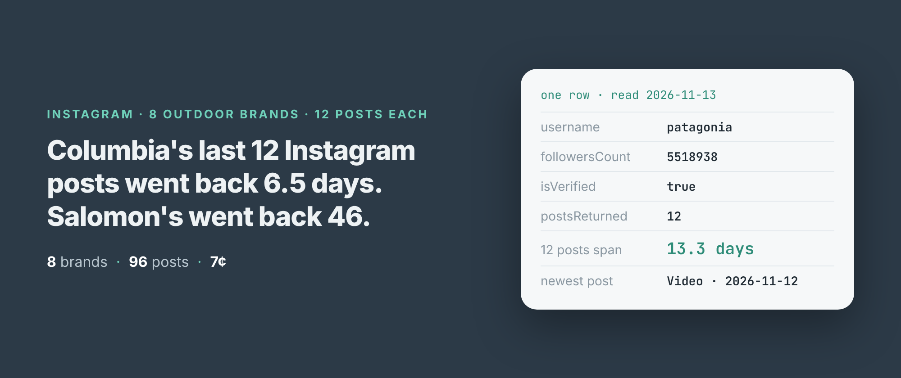
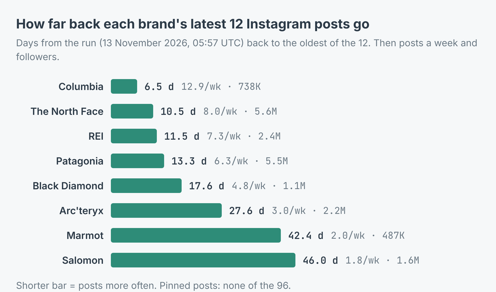
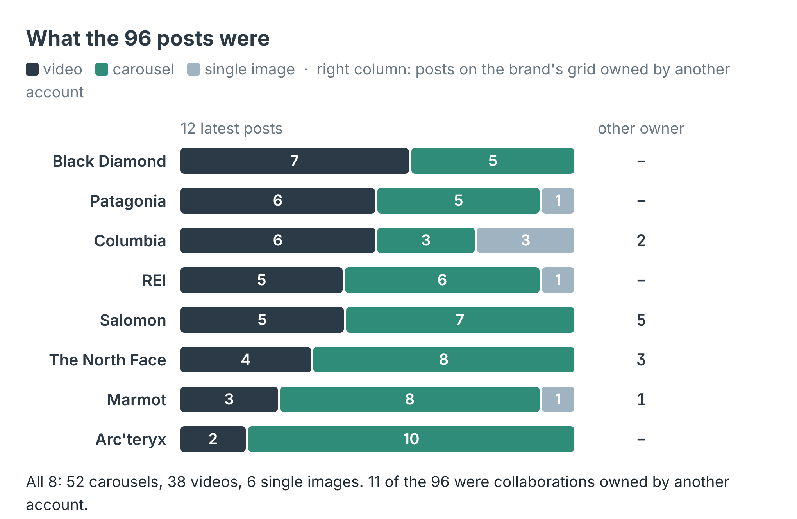
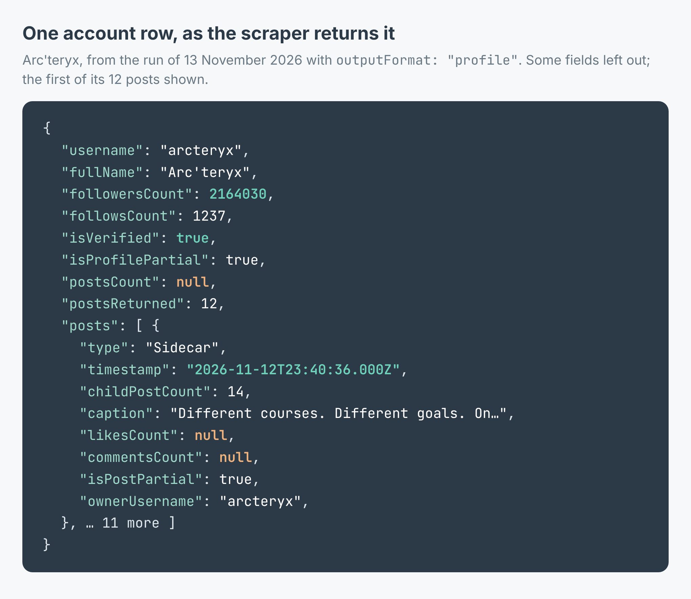

How often do brands post on Instagram? 8 outdoor brands' last 12 posts compared
I wrote this with an AI assistant. The runs, numbers and code are real, and I checked them.

Columbia Sportswear's latest 12 Instagram posts went back six and a half days. Salomon's went back 46. Same industry, same season, the same week of November, and one of them posts seven times as often as the other.
I read the newest posts of eight outdoor brands this morning to answer a question I get asked in different words a lot: how often should a brand like ours be posting? The honest version of the answer starts with how often everyone else does.
The run
I build and run an Instagram profile scraper on Apify. It needs no login and no cookies. You give it usernames, and for each account it returns the profile (followers, bio, verification) and the latest 12 posts, each with its type, timestamp and caption. With outputFormat set to profile, each account is one row with its posts nested under posts:
import { ApifyClient } from 'apify-client';
const client = new ApifyClient({ token: process.env.APIFY_TOKEN });
const run = await client.actor('simple.actor/instagram-profile-posts')
.call({ usernames: ['patagonia', 'rei'], outputFormat: 'profile' });
const { items } = await client.dataset(run.defaultDatasetId)
.listItems();
for (const a of items) {
const oldest = a.posts?.at(-1)?.timestamp;
console.log(a.username, a.followersCount, oldest);
}
I gave it ten handles. The run took 65 seconds and read nine of them. Eight were the brands I wanted: Patagonia, The North Face, Arc'teryx, Columbia, REI, Salomon, Black Diamond and Marmot. That's 96 posts. What happened to the other two is further down.

How far back 12 posts go. The shorter the bar, the more often the brand posts.
The measure is simple. Take the oldest of the 12 posts, count the days from it to the run, and divide 12 by that. Columbia comes out at 12.9 posts a week, and all 12 of its posts were from the last seven days. The North Face posted 8.0 a week, REI 7.3, Patagonia 6.3. Patagonia posted on 9 of the 10 days from 3 to 12 November. Black Diamond is at 4.8. Then there is a gap down to Arc'teryx at 3.0, Marmot at 2.0 and Salomon at 1.8.
Size doesn't explain it. Columbia has 737,739 followers, the fewest of the eight bar Marmot, and posts the most. The North Face and Patagonia have 5.6 and 5.5 million and sit in the middle.
The average hides the pattern
Arc'teryx shows why one number is not enough. Its 12 posts reach back 27.6 days, which reads as three a week. But 9 of the 12 went up in the last seven days. Before that there were two posts at the turn of the month and one on 16 October, two weeks earlier. That's a launch burst, not a schedule. That week's posts introduce a new climbing harness and mark 25 years since its first ski and snowboard shell.
Columbia's week had a burst of its own. Three of its posts are single images that went up within 90 seconds of each other on 10 November, each captioned "Introducing Camp Amaze". They count as three posts here, which is part of why Columbia's number is so high.
Salomon is the opposite case. Five of the 12 posts on its grid are owned by other accounts: four by its running account, salomonrunning, and one by a clothing brand it made a collection with. The newest post owned by salomon itself was from 3 November. The scraper reads the owner off each post, in ownerUsername, so a collaboration is credited to the account that actually posted it. Across all eight brands, 11 of the 96 posts were collaborations owned by someone else.

What the posts were. Carousels outnumber videos, and single images are nearly gone.
The format mix surprised me more than the pace. 52 of the 96 posts were carousels, 38 were videos and only 6 were a single image. Arc'teryx posted ten carousels out of 12, with 74 slides between them, and one carousel held 14. Black Diamond leaned the other way with 7 videos. If your brand still posts one photo at a time, you are doing something these eight have almost stopped doing.
What it cost
The scraper charges $0.008 per profile read, whatever the number of posts. An account that can't be read is not charged. This run read nine profiles, so a caller would pay 9 × $0.008 = $0.072, about 7 cents. Eight of those were the brands. The ninth was a mistake I paid for.
Two of my ten handles were wrong
I typed the handles from memory. fjallraven came back as a row with error: "not_found" and the description "No such account". It wasn't charged, and the run still finished as SUCCEEDED, with its status message saying 9 of 10 accounts were read and 1 answered with an error row.
The handle I guessed for Mammut was worse, because it worked. It read an account with 140 followers, no posts returned and no verification badge. That's somebody's account, just not the brand's, and it cost a profile read like any other. Every brand in this post has isVerified: true and a follower count in the hundreds of thousands or millions. Check those two fields before you trust a handle someone typed.
What the rows don't tell you

One row as the scraper returns it. The orange nulls are what Instagram leaves out for a logged-out reader.
There are no likes or comments in this run. Instagram now answers its logged-out endpoints with "Page Not Found", so the scraper reads the public profile page itself. That page carries the profile and the 12 posts but no like or comment counts. All 96 posts came back with likesCount and commentsCount as null and isPostPartial: true. The scraper marks it so a null is never read as zero. So this measures how often a brand posts, not how well the posts do.
postsCount, the account's lifetime total, came back null for all eight, so I can't tell you how many posts each brand has made in all.
And 12 posts is the limit. That's what Instagram shows a logged-out reader of the grid, and there is no next page to ask for. For Salomon, 12 posts were six and a half weeks. For Columbia they were less than one. To see a frequent poster over a whole month, run the check every few days and keep the rows. The scraper's onlyPostsNewerThan input keeps only posts newer than a window you set, such as "3 days", and refuses with a window_too_wide row rather than hand you a partial answer when the window reaches further back than it can see.
Make it your own list
The example repo, instagram-posting-frequency-checker, takes a file of usernames and prints each account's followers, how many days its last 12 posts span, posts a week, posts in the last seven days and the mix of videos, carousels and single images, and flags any account that isn't verified. It writes the lot to accounts.csv, in Node and in Python. Swap my outdoor brands for yours and your competitors: the coffee roasters in your city, the gyms on your street, every brand your clients compare you with. Run it on a Monday each week and you'll see who has a schedule and who posts in bursts. The scraper is at apify.com/simple.actor/instagram-profile-posts.